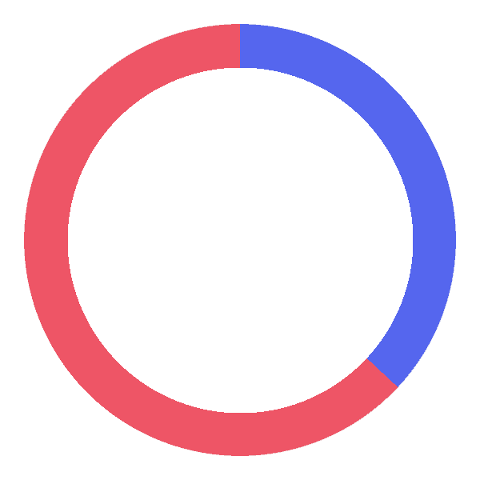
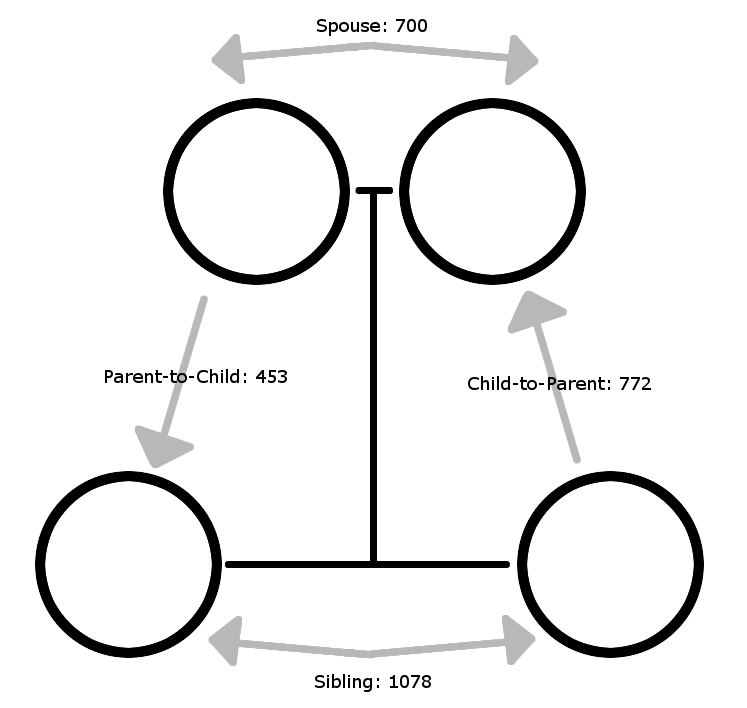

Organ Donation
Statistics
122,071 people need a transplant - but there are only 15,062 donors.
95% of people support donation - but only 54% are registered.
The waiting list grows every ten minutes.
Most people are waiting for kidneys.
Kidneys
37% of living kidney donors are male.

Kidney donations in the family tree:

People of all races can recieve kidneys.
Most donors are deceased, but living donation is common.
Saving Lives
22 people die every day on the waiting list.
One person can save 8 lives.
Heart | Liver | Intestines | Pancreas
2 Lungs | 2 Kidneys
Sources:
- https://organdonor.gov
- https://www.kidney.org